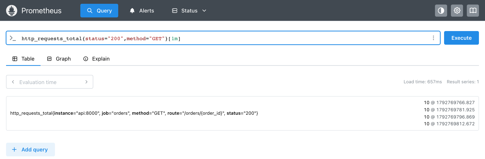

Модуль 3 · метрика как данные · модель данных
Глава 3.1
Измерение,
timestamp и sample
В модуле 2 число прошло путь от приложения до базы Prometheus. В этой главе разобрано, в каком виде оно там хранится. Сначала описано, когда происходит измерение. Затем разобраны две части записи в базе: отметка времени и значение. В конце показано, какую запись Prometheus берёт для ответа на запрос и сколько места занимают записи.
- Категория
- Модель данных
- Уровень
- Вводный
- Опирается на
- Глава 2.1: временной ряд; глава 2.4: scrape
- Результат
- Чтение отсчётов ряда и их отметок времени
§1Стенд модуля
Все опыты модуля выполнены на одном стенде, поэтому сначала о нём. Стенд — это сервис заказов интернет-магазина, написанный на FastAPI. Он отдаёт заказ по номеру, принимает новый заказ и строит отчёт. Новые заказы встают в очередь на сборку, и склад собирает их по одному в секунду. Рядом с сервисом в той же сети Docker Compose работает Prometheus 3.5.0 и опрашивает его раз в 15 секунд.
Сервис показывает на странице /metrics пять своих метрик. Каждая отвечает на свой вопрос о работе сервиса, и каждой посвящена часть модуля.
| Метрика | Тип | Вопрос о сервисе |
|---|---|---|
http_requests_total | counter | Сколько запросов обработано, с каким методом, адресом и кодом ответа |
orders_created_total | counter | Сколько заказов создано с оплатой картой и наличными |
orders_queue_length | gauge | Сколько заказов сейчас ждёт сборки |
http_requests_in_progress | gauge | Сколько запросов обрабатывается в эту секунду |
http_request_duration_seconds | histogram | Сколько времени занимают запросы |
Кроме этих пяти, библиотека prometheus-client добавляет метрики самого процесса Python: память, время процессора, момент запуска. В модуле 2 они были отключены, чтобы ответ помещался на экране. Здесь они оставлены, потому что в их именах записаны единицы измерения: _bytes, _seconds. Адреса стенда: сервис — localhost:8031, Prometheus — localhost:9094.
На стенде есть и счётчики, и текущие величины. Сначала нужно разобрать, в какой момент любая из них превращается в запись в базе.
§2Измерение: число в памяти и момент опроса
Счётчик крутится весь месяц, каждую минуту. Показание переписывают в квитанцию раз в месяц, 25-го числа. В квитанции записано число, которое было на счётчике в тот момент, когда его переписали.
Число в памяти приложения меняется при каждом событии. Prometheus переписывает его раз в 15 секунд. В базу попадает число, которое было в памяти в момент опроса.
В измерении участвуют приложение и Prometheus. Приложение меняет число в своей памяти, когда происходит событие: пришёл запрос, создан заказ, заказ собран. Это происходит в любой момент, и Prometheus об этих изменениях ничего не получает. Prometheus по расписанию запрашивает страницу /metrics и записывает те числа, которые на ней стоят в эту секунду.
Из этого следует, что в базу попадает состояние числа в момент опроса. На схеме — опыт на стенде. В сервис отправлено десять запросов GET /orders/1 … /orders/10, затем Prometheus выполнил очередной опрос.
Десять событий дали одну запись. Время в ней — момент опроса, 15:36:06.827. Запросы были отправлены раньше, и когда именно, по этой записи не определить. Если бы между двумя опросами пришло сто запросов, следующая запись тоже была бы одна, с числом на сто больше.
Запись в базе состоит из двух частей: времени опроса и числа. У неё есть своё название.
§3Отсчёт: время и значение
В журнале показаний счётчика каждая строка состоит из двух граф: дата и число. Строка без даты ничего не сообщает, строка без числа не нужна.
Каждая запись ряда состоит из отметки времени и значения. Ряд — это журнал одной величины, где строки стоят по времени.
Отсчётsample · одна запись временного ряда
Пара из отметки времени и значения. Отметка времени называется timestamp, значение — value. Временной ряд из главы 2.1 — это последовательность отсчётов одной величины, расположенных по времени.
В документации Prometheus: «Каждый отсчёт состоит из значения float64 и отметки времени с точностью до миллисекунды».
Отсчёты ряда можно увидеть в веб-интерфейсе Prometheus. Для этого после имени ряда в квадратных скобках указывают промежуток времени: запрос http_requests_total{status="200",method="GET"}[1m] возвращает все отсчёты этого ряда за последнюю минуту. На вкладке Table они выводятся столбцом справа от названия ряда.

Каждая строка справа — один отсчёт. Слева от знака @ стоит значение, справа — отметка времени. Опрос выполняется раз в 15 секунд, поэтому за минуту отсчётов четыре. На схеме те же отсчёты переведены в обычное время.
По схеме видно два свойства. Первое: новых запросов не было и значение не менялось, но отсчёт записан на каждом опросе. Prometheus сохраняет отсчёт при каждом успешном опросе, даже если число то же самое. Второе: промежутки между отсчётами близки к 15 секундам, но точно 15 не равны. Интервал задаёт, когда начать опрос, а отметка ставится по часам в момент начала.
Отметка времени записана длинным числом с точкой. Следующий раздел объясняет, как его читать.
§4Отметка времени
Возраст можно записать датой рождения, а можно числом прожитых дней: 7 300 дней. Второй способ — одно число без месяцев и високосных лет, и его легко сравнивать и вычитать.
Момент времени записывается числом секунд, прошедших с начала 1 января 1970 года по Гринвичу. Два момента сравниваются как два числа, промежуток между ними — их разность.
Такая запись времени называется Unix-временем. Число 1792769766.827 означает, что с полуночи 1 января 1970 года по всемирному времени UTC прошло 1 792 769 766 секунд и 827 миллисекунд. В обычной записи это 23 октября 2026 года, 15:36:06.827 UTC. Внутри базы Prometheus хранит отметку целым числом миллисекунд: 1792769766827. Интерфейс показывает её в секундах с тремя знаками после точки.
Часового пояса в отметке нет: это всегда UTC. Время по Москве на три часа больше, но отметка от этого не меняется. Перевод в местное время делает интерфейс при выводе, например на оси графика. Поэтому два сервера в разных часовых поясах записывают для одного момента одинаковую отметку.
Одно время на весь опрос
Отметку ставит Prometheus, и ставит её один раз за опрос. Как показано в главе 2.4, это момент начала запроса к target. Все числа из одного ответа получают одну и ту же отметку, и ряд up, который Prometheus пишет после опроса, тоже. На стенде запрошены три ряда за одну минуту.
У трёх рядов отметки совпадают до миллисекунды, хотя один ряд пишет Prometheus, а два других пришли в ответе сервиса. Поэтому значения разных рядов одного target можно сравнивать по одной отметке: они описывают один и тот же момент.
Подробнее: отметка в ответе приложения
Текстовый формат разрешает приложению поставить свою отметку после значения: orders_queue_length 3 1792769766000. Библиотеки для Python, Go и Java по умолчанию её не пишут. Если отметка всё же есть, Prometheus по умолчанию использует её вместо времени опроса; это меняет параметр honor_timestamps в задании.
Документация Prometheus советует не ставить отметки в ответе. Отметка из прошлого может оказаться старше пяти минут, и тогда ряд не будет виден в запросах (§6).
Отметка времени отвечает на вопрос «когда». Вторая часть отсчёта отвечает на вопрос «сколько».
§5Значение
В графу журнала вписывают только число. Марку счётчика и номер квартиры пишут в шапке страницы, потому что они не меняются от строки к строке.
Значение — всегда число. Всё, что описывает величину словами, записывают в имя и метки ряда, общие для всех его отсчётов.
Значение отсчёта хранится как число с плавающей точкой двойной точности, тип float64. Это тот же тип, что float в Python. Счётчик запросов — целое число, но и он хранится как float64. Поэтому библиотека пишет в ответе 10.0, а интерфейс Prometheus показывает 10: это одно и то же значение.
Дробные значения нужны для времени и долей. На стенде сумма длительностей одиннадцати запросов к заказам равнялась 0.019026665948331356 секунды. Кроме обычных чисел, значение может быть одним из трёх особых: NaN — «не число», +Inf и -Inf — бесконечность.
Текст и время внутри значения
Текст в значение записать нельзя. Если величину нужно описать словами, например версию Python, слова записывают в метки, а значением ставят 1. На стенде так устроена метрика библиотеки python_info. Время, наоборот, можно записать в значение: тогда это число секунд Unix-времени. Так устроена метрика process_start_time_seconds — момент запуска процесса.
Во второй строке время стоит в значении, и у этого отсчёта есть ещё и своя отметка — момент опроса. Это две разные вещи. Отметка сообщает, когда Prometheus прочитал число. Значение сообщает, когда был запущен процесс, и между опросами оно не меняется, пока процесс работает.
Подробнее: точность целых чисел в float64
Тип float64 хранит целые числа точно до 253 = 9 007 199 254 740 992. Счётчик, который растёт на миллион в секунду, дойдёт до этой границы через 285 лет, поэтому для счётчиков точности достаточно.
Запись 1.7927697213e+09 — экспоненциальная форма: 1,7927697213 × 109. Библиотека Python выбирает её для больших чисел; Prometheus читает обе формы одинаково.
Отсчёты ряда хранятся по одному на каждый опрос. Запрос без промежутка в квадратных скобках возвращает одно число, и нужно понять, какой отсчёт для него выбран.
§6Последний отсчёт в запросе
Врач спрашивает, какая температура у пациента. Медсестра смотрит последнюю запись в температурном листе. Если последняя запись сделана три дня назад, отвечать по ней нельзя.
Prometheus отвечает на запрос «какое значение сейчас» по последнему сохранённому отсчёту. Если последний отсчёт старше пяти минут, ряд в ответ не попадает.
Запрос без квадратных скобок, например http_requests_total{status="404"}, называется мгновенным. Он возвращает по одному значению на ряд — на тот момент, который указан в запросе. В интерфейсе это момент нажатия кнопки Execute. Отсчёта ровно в этот момент обычно нет, поэтому Prometheus берёт последний отсчёт, сделанный до него, но не раньше чем за пять минут. Эти пять минут называются lookback delta.
Ниже ответ того же запроса через программный интерфейс Prometheus. Запрос выполнен в 15:53:04.543, последний опрос сервиса был в 15:52:51.613.
"metric": {"__name__": "http_requests_total", "instance": "api:8000",
"job": "orders", "method": "GET",
"route": "/orders/{order_id}", "status": "404"},
"value": [1792770784.543, "1"]
Значение 1 взято из отсчёта 15:52:51.613. Отметка в ответе — 1792770784.543, то есть 15:53:04.543: это момент запроса. Поэтому в ответе мгновенного запроса стоит время, на которое считали ответ, и оно не совпадает со временем опроса.
Оранжевым выделен отсчёт, который попал в ответ: последний до момента запроса. Пунктир — момент запроса, отсчёта в нём нет.
Если отсчётов нет совсем, ответ пустой. На стенде тот же запрос на 15:35:00 вернул пустой результат. Первый опрос нового стенда был в 15:35:36, и до него у ряда не было ни одного отсчёта. Ряд, который пропал из ответа приложения, исчезает из запросов раньше пяти минут. Причина — отметка «устарел» из главы 2.4: Prometheus ставит её такому ряду при следующем опросе.
Каждый опрос добавляет по отсчёту в каждый ряд. Остаётся посчитать, сколько их набирается и сколько места они занимают.
§7Сколько отсчётов хранится
Если дежурный записывает показания десяти приборов каждый час, за сутки в журнале 240 строк. Если каждые полчаса — 480. Объём журнала зависит от числа приборов и частоты записей.
Число отсчётов зависит от числа рядов и интервала опроса. Содержимое запросов к сервису на объём не влияет.
Расчёт складывается из двух множителей. При интервале 15 секунд у каждого ряда 4 отсчёта в минуту и 5 760 отсчётов в сутки. В одном из опытов на стенде было 34 ряда: 29 рядов из ответа сервиса и 5 служебных рядов, которые Prometheus пишет о каждом опросе. Получается 34 × 5 760 = 195 840 отсчётов в сутки.
Без сжатия отсчёт занимает 16 байт: 8 байт отметка и 8 байт значение. Prometheus хранит отсчёты сжатыми, и по документации в среднем на отсчёт уходит 1–2 байта. Сжатие работает, потому что соседние отсчёты похожи: отметки идут почти ровно через 15 секунд, а значения часто повторяются, как четыре десятки в §3. Для стенда это 0,2–0,4 мегабайта в сутки.
Из расчёта следует, что объём базы определяет число рядов, умноженное на частоту опроса. Число запросов к сервису на него почти не влияет: тысяча запросов в секунду меняет только значения счётчиков, а отсчётов остаётся столько же. Число рядов, наоборот, растёт, когда у меток появляются новые значения. Поэтому при выборе меток считают, сколько рядов они дадут.
§8Проверьте себя
Вопрос 1Между двумя опросами в сервис пришло 50 запросов. Сколько отсчётов добавится в ряд счётчика запросов при следующем опросе?
Отдельные события в Prometheus не попадают. Приложение увеличивает число в памяти, а Prometheus читает его один раз за опрос.
Верно. Опрос даёт один отсчёт на ряд. В нём число из памяти приложения в момент опроса.
Отсчёт записывается при каждом успешном опросе. На стенде четыре отсчёта подряд имели значение 10.
Вопрос 2Что означает отметка времени отсчёта счётчика запросов?
Время запросов в метрику не попадает. По отсчёту нельзя определить, когда именно пришли запросы.
Библиотеки отметку в ответ не пишут. Её ставит Prometheus.
Верно. У всех рядов одного опроса, включая
up, отметка одна и та же.
Вопрос 3Мгновенный запрос выполнен в 12:00:10, последние отсчёты ряда сделаны в 11:59:55 и 11:59:40. Какое время стоит в ответе?
Верно. В ответе мгновенного запроса стоит момент, на который считали ответ. Значение — из последнего отсчёта до этого момента.
На стенде запрос в 15:53:04.543 вернул эту же отметку, хотя последний опрос был в 15:52:51.613.
Мгновенный запрос берёт последний отсчёт до момента запроса. Отсчёт 11:59:40 старше, чем 11:59:55.
Вопрос 4Нужно хранить версию приложения, например 2.4.1. Как её записать в метрику?
Значение — одно число float64. Строка
2.4.1не число, и Prometheus отклонит такой ответ целиком.Верно. Так устроена метрика
python_infoна стенде.Отметка времени — число миллисекунд Unix-времени, версию в ней не записать.
Вопрос 5Интервал опроса уменьшили с 30 до 15 секунд. Как изменится число отсчётов в сутки при тех же рядах?
Число запросов меняет значения счётчиков. Отсчётов на ряд столько, сколько опросов.
Верно. Отсчётов в сутки на ряд станет 5 760 вместо 2 880.
Чем короче интервал, тем чаще опросы и тем больше отсчётов.
- Prometheus. Data model — prometheus.io/docs/concepts/data_model
- Prometheus. Storage: «on average, Prometheus uses only around 1–2 bytes per sample» — prometheus.io/docs/prometheus/latest/storage
- Prometheus. Querying basics: instant vectors, range vectors, staleness — prometheus.io/docs/prometheus/latest/querying/basics
- Prometheus. Exposition formats: timestamps — prometheus.io/docs/instrumenting/exposition_formats
- Стенд модуля 3: отсчёты, отметки и ответы API получены 23.10.2026